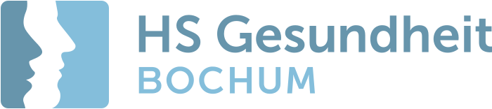
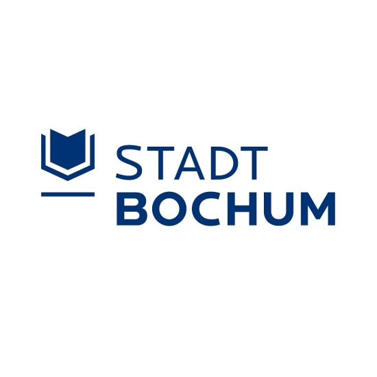
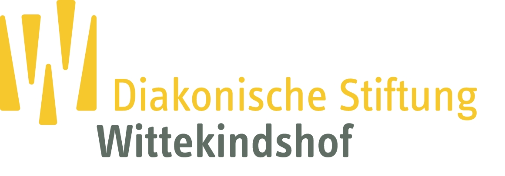
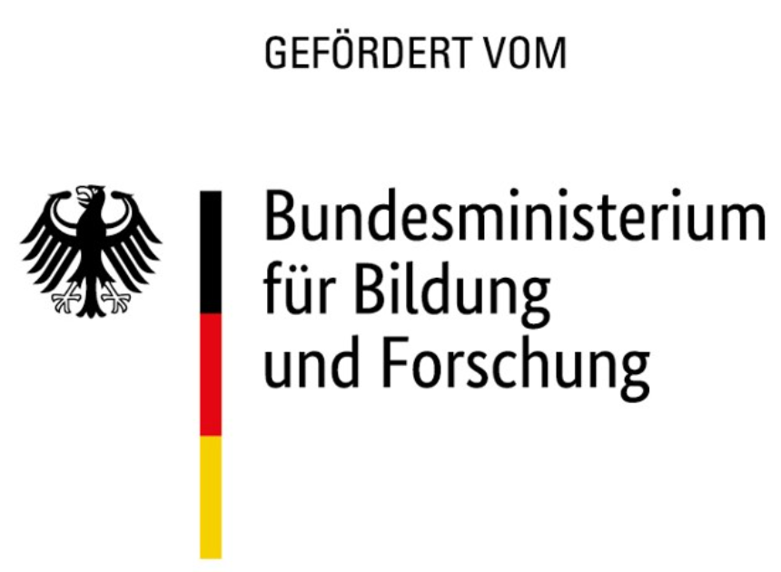

Motivation
Öffentlichkeitsbeteiligung ist fester Bestandteil kommunaler Planungsverfahren. Artikulationsschwache Gruppen können sich hier bislang nur unzureichend einbringen. Menschen mit einer sogenannten geistigen Behinderung sind Expertinnen und Experten für den Umgang mit Barrieren. Sie sollten daher verstärkt in die Entwicklung digitaler, barrieresensibler Formate zur Beteiligung an kommunaler Planung eingebunden werden.
Ziele und Vorgehen
Im Projekt DiKomAll kooperieren Forschende der Disziplinen Gesundheitsförderung, Raumplanung und Geoinformatik, Pädagogik, Inklusion mit Praktikerinnen und Praktikern aus kommunaler Verwaltung, Stadtplanung, Informatik und UX-Design sowie Co-Forschenden mit sogenannten geistigen Behinderungen. Sie arbeiten gemeinsam an barrierearmen, digitalen Beteiligungsformaten. Dazu erproben sie bestehende Softwarelösungen wie KomMonitor, KoboToolbox, Ogito und StadtRaumMonitor in realen Verfahrenskontexten wie der Lärmaktionsplanung und dem Fachplan Gesundheit. Ziel ist die Entwicklung digitaler Beteiligungsanwendungen, die für verschiedene Gruppen einfach zu nutzen und inhaltlich gut erfassbar sind. Gleichzeitig sollen deren Ergebnisse verfahrensrelevant und leicht verständlich dargestellt werden.
Innovationen und Perspektiven
Die gewonnenen Erkenntnisse und entwickelten Demonstratoren eröffnen neue Möglichkeiten kommunaler Beteiligung weit über die Gruppe der Menschen mit Behinderung und die gewählten Planungsverfahren hinaus. Das Ergebnis sind gangbare Wege für eine inklusive digitale Kommune für alle.
